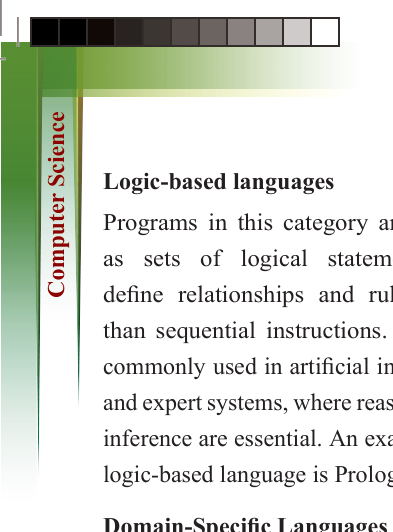
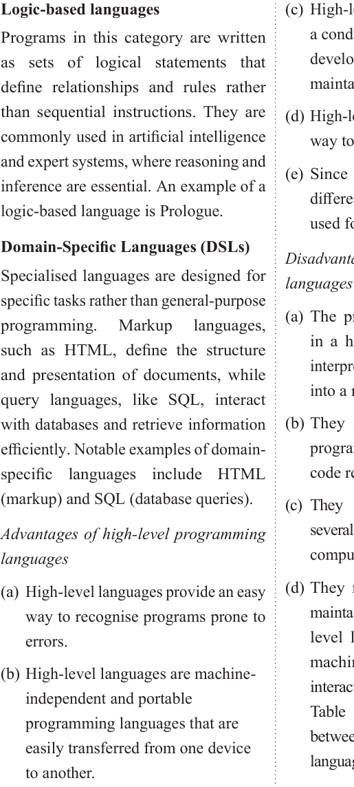

for Secondary Schools
Logic-based languages
Programs in this category are written as sets of logical statements that define relationships and rules rather than sequential instructions. They are
commonly used in artificial intelligence
and expert systems, where reasoning and
inference are essential. An example of a logic-based language is Prologue.
Domain-Specific Languages (DSLs)
Specialised languages are designed for
specific tasks rather than general-purpose
programming.
Markup
languages,
such as HTML, define the structure and presentation of documents, while query languages, like SQL, interact
with databases and retrieve information

efficiently. Notable examples of domain-

specific languages include HTML


(markup) and SQL (database queries).

Advantages of high-level programming

languages

(a) High-level languages provide an easy


way to recognise programs prone to

errors.

(b) High-level languages are machine-


independent and portable

programming languages that are

easily transferred from one device

to another.

(c) High-level languages provide


a conducive environment for

developing, executing, and

maintaining a program.

(d) High-level languages provide an easy


way to learn and use them.
(e) Since high-level languages run on
different platforms, they are widely
used for programming.
Disadvantages of high-level programming
languages
(a) The program, which is developed
in a high-level language, must be
interpreted or compiled to be changed
into a machine-readable form.
(b) They are not fast, as changing a program from source code to object code requires time.
(c) They overload the processor with
several typed statements, slowing the
computer’s processing speed.
(d) They need enough memory to be maintained and executed. Since high-
level languages are not written in machine code, they have no direct
interaction with the hardware device.
Table 3.3 explains the differences between high-level and low-level
languages.
